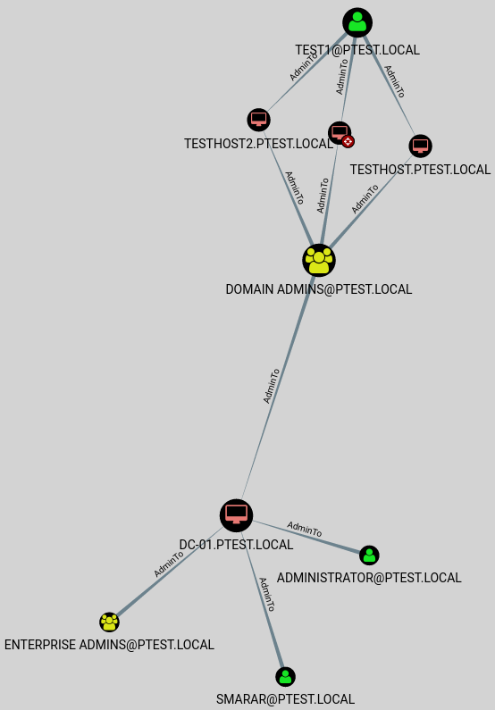

Uploading
Once you have exported the data to CSV, download the files and upload them to BloodHound
Alternatively, you can export the data directly to the Neo4j REST API using the -URI and -UserPass arguments as described in the BloodHound Github wiki.
Querying
BloodHound includes several powerful baked-in analytical queries. A notable query here is “shortest path to Domain Admins”.
The example below displays the query “Find Top 10 users with the Most Admins”.

BloodHound also includes custom node selection where a specified source, and target node are selected for attack path mapping. Perhaps you would like to skip finding a path to domain admin and would rather move straight to a database or the domain controller itself.
You can select the compromised object as a start node and the target machine as an end node.